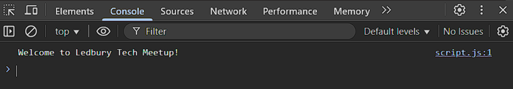

This page demonstrates the use of console.log() in JavaScript to send a message to the browser's
developer console.
When the page loads, the message 'Welcome to Ledbury Tech Meetup!' is printed behind the scenes.
This message does not appear on the page itself.
Instead, it is sent to the developer console - a tool built into modern browsers that lets developers inspect and debug their code.
To view the message, open your browser's developer tools (usually by pressing F12) and click the
"Console" tab.

Screenshot of the developer console in a web browser showing the message printed by console.log()
when the page loads.